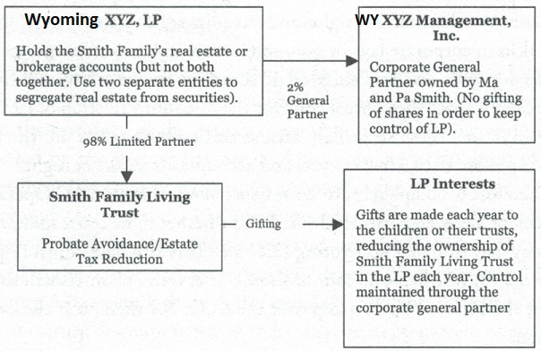
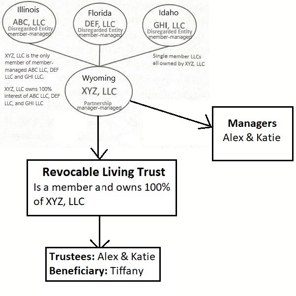

Estate planning is the planning for distribution of your wealth after your death. A number of issues come into play when we deal with families and estate planning. These include:
All citizens automatically have an estate plan. However, since it arises by default, it is not usually they want. Unless you have drafted and implemented a Will or Trust, your state of residence has a plan for the distribution of your assets, known as intestate succession (intestate means to die without a Will). These rules amount to a family checklist of who stands first, second or third in line to receive your estate if you pass without drafting a Will. If you want your assets to go to a charity but don’t properly document that fact your wishes will not be fulfilled. Interestingly, if no family members show up, most state governments wind up with the dollars you leave behind.
Again, most default situations do not satisfy specific needs If you want to ensure that your wealth will benefit the people or organizations you care about you will need a Will Additionally, if you want to avoid the cost and other pitfalls of Probate, or if you want to minimize the taxes that will be imposed on your estate after your death, you will need a Trust.
Probate is a court-supervised process for the distribution of assets, which you hold in your name alone, or in a form that does not automatically transfer title to someone else at your death, such as joint tenancy. Probate requires hiring an attorney to represent your estate The process usually takes from nine months to two years to get through or be "settled" , depending on the circumstances Probate fees can range from a few thousand to tens of thousands of dollars in some cases.
In some states, the probate fees paid to attorneys are set by statute, and are usually quite generous. For example, in California probating a million dollar asset (such as a house) can result in $23,000 in attorney’s fees and $23,000 for executor fees, or $46,000! Paying $2,000 to $4,000 for a Living Trust to avoid probate (and probate fees) is a much better choice.
Probate is required if you do not have a will. It is also required if you have a will but no trust. It may be further required if you have property in your name alone or if you have a Trust that is not properly structured and funded (i.e. title was not transferred from your individual name into the name of the Trust). As well, if you have property in more than one county, or more than one state, probate may be required in every county and state where your property is located.
A Living Trust, also known as a Revocable Trust, is a Trust with terms and conditions that can be changed, terminated, or revoked to meet changing needs. All property placed inside the Trust is managed by your Trustee (which can be you during your lifetime) and distributed at your death by your appointed Trustee without the need for a Probate. This is because assets that are placed into the Trust are not subject to Probate. Meaning the Trust can handle the job instead of the local court, which can save you a lot of money.
Funding the Trust is a crucial step and involves retitling assets from your name to the name of the Trust. Living Trusts usually provide that the income of the Trust is paid to you at periodic intervals, and you reserve the right to take out as much of the principal as you need during your lifetime.
Most Living Trusts are set up by individuals or couples who name themselves to serve as Trustee while they are alive and legally competent, with provisions for someone else, usually another relative, to serve as Trustee once they die or become incapacitated. In this way, your affairs will continue to be managed by someone you trust, without the need for guardianship or conservatorship proceedings. Because Trusts are private documents, which in most states are not filed with the court, your privacy is maintained through a Trust.
Properly drafted Living Trusts with spendthrift provisions can, in some cases, also place assets beyond the reach of creditors seeking to collect from a spouse, children or others. (It can’t, however, protect the Grantor of the trust.) With a "spendthrift" being a person who wastes money, a spendthrift trust contains protections against such waste and imprudence for the ultimate benefit of the wasteful beneficiary. In most states, a beneficiary’s creditors cannot reach Trust assets if the power to distribute Trust assets is subject to the Trustee’s discretion, provided the Trustee and the beneficiary are not the same person. Certain states, such as Nevada, offer Asset Protection Trusts, which can be very useful in protecting assets from future claimants. For more information on Nevada Asset Protection Trusts visit www.sutlaw.com.
Another popular use of the Living Trust is to defer, reduce or avoid altogether federal estate taxes that would otherwise be imposed at your death. As of this edition, there is no federal estate tax imposed on individual estates valued at $11.4 million or less. This amount is per person per lifetime. So, a married couple (gay or straight) can transfer a total of $22.8 million between them. Any amount above that is taxed at a 40% rate. This is a much more generous rate than the $600,000 limit and 55% tax rate back in the late 90’s. Be sure to check with your advisor on the latest rules in this area. Presently, when one spouse dies, no federal estate tax is due because one spouse can leave all of his or her estate to the other spouse, tax free, through the use of the Unlimited Marital Deduction. (This benefit does not extend to a surviving spouse who is not a U.S. citizen.) However, when the second spouse dies, the entire estate is subject to federal estate tax.
Without any basic tax planning, only the unified credit amount of the value of the estate can be excluded from federal estate taxation. With even minimal tax planning, an estate valued at twice that amount can be transferred free of federal estate tax by including provisions in the Living Trust for the creation of a Family Trust (also called a Credit-Shelter Trust, or Exemption Equivalent Trust). In some cases, a surviving spouse may use the deceased spouse unused estate tax exemption without having to create and fund a family trust (work with your advisor on this). The point is that significant taxes can be saved just by using a Living Trust. Through the use of other tax planning techniques, larger amounts can be exempted from federal estate taxation.
To summarize this estate planning overview:
Limited Partnerships and LLCs are excellent entities to use as estate planning tools. Both are able to deal with the two major issues of estate planning:
First, to get the least pleasant issue out of the way at the start, we will deal with taxes. As mentioned, as of this writing $11.4 million of a person’s estate is excluded from estate taxes. Anything over that amount (which is indexed for inflation and rises each year) is taxed at the federal estate tax rate of 40%. (Again, these rates could possibly change in the coming years so consult with your advisor.)
When estate taxes were assessed on amounts above $600,000 parents would gift assets to their children during their lifetimes to reduce the value of their estate, and the amount of taxes assessed. The problem was that with gifting the children took assets at their parents’ basis, or what their parents paid for the property. Assume Mom and Dad bought a 10-unit apartment building for $100,000 back in the day. It is now worth $1,000,000. Previously, with an estate tax of 55% on estates above $600,000 if the parents left the building to the kids at death the tax would be $220,000 (the $1,000,000 value less the $600,000 exclusion = $400,000 x a 55% tax). They’d probably have to sell the building to pay the tax. So, the parents would gift interests to the kids over time (a procedure we’ll discuss ahead). Before the parents passed away the kids would own the building, and there would be no estate tax. This was fine except for one wrinkle. The kids took the building at the parent’s original basis of $100,000, the amount they paid for it long ago. If they later sell the building for $1,000,000 the kids will pay a capital gains tax on the profit of $900,000 (the $1 million sales price minus the $100,000 original cost). For most people the federal long term capital gain tax rate (at this writing) is 20%. A 3.8% extra tax is imposed on those with higher incomes. In a standard case the kids would pay $180,000 in taxes.
However, this all changes if the kids inherit directly from the parents at their death. At that point the kids get a "step up in basis", meaning their new basis in the building is not the original $100,000 but the stepped-up basis of the $1 million the building is worth at their parents’ passing. If the kids turn around and sell the building for $1 million after the estate is settled, they pay no capital gains tax. Due to the inheritance their basis is $1 million. When they sell it for $1 million there is no profit, and thus no capital gains tax.
With the increase in the exemption amount from a lower rate of $600,000 to $11.4 million per person, parents are now reconsidering the gifting strategy. Not many couples are going to be passing $22.8 million to their children. (If you are, good for you!) The children can avoid large capital gains taxes if they get the step up in basis at their parents’ death instead of the original basis with a lifetime gift. So instead of lifetime gifts many parents and their advisors are looking at passing appreciated assets at death. Be sure to work with your advisor to analyze which method is best for you.
For those with larger estates or those who want their children involved and learning the business, lifetime giving is still an attractive option. It is important to understand that these gifts are to be made year after year over time.
As of this writing the IRS set an exclusion of $15,000 per year per person from the gift tax. A father and mother then can give. up to $15,000 to each of their children. Assuming they have four children, a total of $120,000 can be gifted each year, but there is no limit on the number of children (or anyone else) who may receive gifts. If their grandparents are so inclined, another $120,000 can be gifted to the four children (Please note that if Grandma gifts $15,000 to her granddaughter in May as a part of her estate planning strategy, and then gives her another $100 as a Christmas present, technically that $100 maybe subject to a gift tax, or be counted against Grandma’s $11.4 million lifetime exemption).
So, with a $15,000 gift tax exclusion in place, the estate planning strategy of gifting $15,000 from each spouse to each child on an annual basis was born. And with the ability for each spouse to gift (as in our example) to four children, a grand total of $120,000 could be gifted away every year. There is no limit on the number of children - or grandchildren, nieces, nephews, and non-relatives - that you may gift to at this point.
But what if the parents have an estate valued at $32.8 million? They can give $22.8 million at their death. But we still have $10 million to worry about (at a 40% tax rate!) With a gifting program of $120,000 per year, it would take over 83 years to gift away this estate in allowable gifts from two spouses to their four children. And note, where there are only two children, the corresponding gift allowance reduces to $60,000, meaning that it would take over a century to gift away their estate. And further note that an estate worth $32 million today might appreciate to be worth $80 million ten years from now - further running out the time needed for gifting. Either the parents start gifting early (which almost never happens), or they must figure out a way to accelerate their gifting program.
Before illustrating how to accelerate gifting through the use of an LP or LLC, it should be noted that there are a number of estate planning techniques available. Some will be briefly addressed in the Frequently Asked Questions section. But because a complete review of the estate planning arena is beyond the scope of this book, please consider consulting with an estate planning attorney in your own area to develop and implement a strategy best suited for your individual situation.
Mary and Gary have formed G & M Properties, LP to hold a four-plex they have purchased for investment purposes. They have formed M & G Holdings, LP, to hold certain stock investments they have made. To manage each of the Limited Partnerships they form Woodside Management Corporation to own two percent of each Limited Partnership and serve as the corporate general partner, thus encapsulating the personal liability of the general partner in a corporate (or, had they wanted to, an LLC) entity. And, by using LPs in their home state of California, Mary and Gary avoided paying California’s annoying gross receipts tax on LLC revenues.
The four-plex was purchased for $400,000 in cash. The building, while old, is located on a large lot in an appreciating downtown area going through a renaissance of redevelopment. It is reasonably believed that the land value alone will be worth $800,000 in the next 10 years. Mary and Gary want to distribute Limited Partnership interests to their four children before the asset appreciates up and away from their ability to gift it out.
To do so, they have the four-plex informally valued by a local realtor. While an independent real estate appraiser may charge $3,000 or more for such a report, all Mary and Gary need for their gifting program is a letter from an independent third party knowledgeable in the field as to the current market value. The broker who sold them the property knows the market and is happy to write such a letter on an annual basis for their file. He also appreciates the nice bottle of wine Mary and Gary give him every year as a thank-you gift. This token of appreciation is acceptable, but their accountant reminds them that to be valid in the eyes of the IRS the appraiser must have no pecuniary interest in the outcome of any minority discount case. In addition, the expert must not rely on data furnished by the taxpayer but must rather conduct his own independent examination of the assets and the market. (Know that some lawyers and CPAs are more comfortable with an appraisal coming from a full price professional appraiser.)
In the first year of owning the property, Mary and Gary’s broker’s letter indicates that the market value is right at their purchase price, or $400,000. Mary and Gary are not upset the property has not yet greatly appreciated They want the appraised value to be low so they can gift away a greater percentage interest to their children.
With four children, Amy, Charlie, Ellie and Haley, they can gift a total of $120,000 per year (two parents x four children x $15,000 per child) If the property does not increase in value and Mary and Gary do not use a valuation discount, they can gift the property to their children in just over four and one-half years. However, because the property is going to appreciate, and because Mary and Gary wanted to start gifting away their other Limited Partnership, M & G Holdings, LP, as well, they are keen to gift away G & M. Properties, LP’s Limited Partnership interests as soon as possible by taking as great a valuation discount as is practical.
First, Mary and Gary need to know more about valuation discounting. They learn from their accountant that gift and estate taxes are levied on the fair market value of the interest that is gifted during life or bequeathed at death. Fair market value for the purposes of assessing both taxes is defined as the price a willing buyer, and a willing seller, both having knowledge of the relevant facts involved, and neither being forced to buy or sell, would be willing to accept. Fair market value can then be discounted and reduced for a lack of marketability or a lack of control.
A lack of marketability occurs when the property interest cannot be disposed of in an efficient manner - either due to restrictions on transfer found in the organizational documents, or due to external market factors. For example, a very profitable retail business in Prudhoe Bay, Alaska, may suffer from an external lack of marketability because not everyone wants to live above the Arctic Circle.
A lack of control (or a minority discount) occurs when the interest to be purchased is not large enough to have control over the asset or business it represents. Buyers will not pay 40 percent of the fair market value of an asset when the 40 percent is represented by an interest that allows them no control. As an example, a commercial office building is worth $2 million. A 40 percent interest in the asset could be considered worth $800,000. But with the asset held in an LLC or an LP, the 40 percent ownership is in the entity—not the building itself— and does not give the control of selling the property. So, the buyer is not going to pay $800,000 for a 40 percent, interest that may be locked up and illiquid for years to come Instead he or she is going to put $800,000 into owning a different office building where he or she has 100 percent control. Which means, in market terms, that the 40 percent interest in the first office building is going to have to be valued for a lot less to get anyone interested in investing. In a Limited Partnership setting, a buyer could purchase a 98 percent Limited Partnership interest and still not have control, due to a two percent General Partnership interest controlling the entire investment. A valuation discount for a lack of control is justified and accepted in such a circumstance.
As is evident, a lack of marketability and control are foundational features of Limited Partnerships and LLCs. These entities are used for the very reason that they offer restrictions on transferability and control. As such, they are the ideal entitles for use in obtaining justifiable valuation discounts.
So instead of gifting $18,000 in cash directly to one child - and losing all control over how that child manages, or mismanages, the money as well as perhaps paying a gift tax on $4,000 - by putting the money into a Limited Partnership, gifting a Limited Partnership interest to the Child, and retaining a General Partnership interest, control is maintained. The $18,000 interest can be discounted, due to a lack of control and marketability to a value of $15,000, thus avoiding any gift tax.
Once this valuation technique is appreciated, the question always becomes How much of a discount will the IRS allow Is it 25 percent, 35 percent, or can you go as high as 65 percent? While there is no bright-line test or number, the simple answer is found in this maxim: “Pigs get fat. Hogs get slaughtered". If you get greedy with your discounting, the IRS can and will call into question all of your planning. In my practice I do not advise my clients to go over a 35 percent discount. I prefer to use a 30 percent discount. I have dealt with some professionals who, with absolute certainty, assert that higher discounts are justified. Again, there is no correct answer. But it is interesting to note that most court cases adjudicating discounting issues involve fact patterns in which taxpayers took discounts of 40 percent or more. Importantly, recent IRS cases have indicated a willingness to challenge discounts of more than 30 percent. The Treasury is working new regulations involving, these issues. Because this is an ever-changing area of the law, be sure to deal with your tax advisor when delving into discounting. You and your advisor should establish your own comfort level for gifting.
Back to Mary and Gary. They want to gift away G & M Properties, LP, as soon as possible With the assistance of their accountant, they utilize the brokers letter to establish a value of $400,000 for the fourplex. As such, each one percent interest in the Limited Partnership is worth $4,000 However, because the Limited Partnership Agreement provides for restrictions on any transfer of interest and limits the limited partners’ involvement in management and control, the two discounts for marketability and control justify a 30 percent reduction in value. Accordingly, each one percent interest is valued at $2,800 instead of $4,000. So, instead of only gifting a three and three quarters percent fair market value interest to each child (3.75% x $4,000 = $15,000), each spouse can gift more than a five and one third percent discounted interest to each child (5.35% x $2,800 = $15,000).
Mary and Gary’s accountant says that minutes of a meeting should be prepared detailing and approving the gifts. Upon approval, new partnership certificates are to be issued whereby Mary and Gary’s interest (held by their Living Trust) is reduced and the four children’s interests (held by a custodian pursuant to the Uniform Gifts to Minors Act or, in some states, the Uniform Act on Transfers to Minors) are accordingly increased. Mary and Gary’s accountant states that it is important to follow these formalities.
The annual result for four children receiving and two parents gifting is that instead of gifting 30 percent of the Limited Partnership interests, by discounting Mary and Gary give away, 42.8 percent of the Limited Partnership interests each year to Amy, Charlie, Ellie, and newborn Haley. Assuming they want Woodside Management, the corporate general partner, to retain its two percent General Partnership interest in G & M Properties, Limited Partnership for control and management purposes then a total of 98 percent is to be gifted. Without using a valuation discount the gifting will take 3.3 years. By taking a 30 percent discount, the gifting is completed in 2.3 years. When estates valued at even more money are involved the difference in the number of years to accomplish the gifting can be even more significant.
However, Mary and Gary’s accountant reminds them that the property valuation is not a constant. They need to base the value for gifting on a broker’s letter of appraisal on an annual basis. If their property does not increase in value, they can gift out all the Limited Partnership interests in 2.3 years. If, however, the property appreciates in value, it will take longer.
Then their accountant tells them about an interesting strategy for accelerated gifting. Assume that gifts have been made to Amy, Charlie, Ellie, and Haley in year one. It is now the end of year two, and no gifts have been made, but the property continues to appreciate. In late December, Mary and Gary get the broker’s letter estimating that the property is now worth $450,000. Privately, the broker tells the two of them it is his belief that when certain properties sell the following spring, their four-plex will be worth more than $600,000. They need to gift their interests sooner rather than later.
Based on the broker’s appraisal of $450,000 they value each one percent interest at $4,500. With a 30 percent discount, each one percent interest is worth $3,150. On December 30th of year two, each parent gifts 4.76 percent to each child (4.76% x $3,150 per 1% interest = approximately $15,000). With two spouses and four children, the aggregate gifted interest is 38 percent. When combined with the 42.8 percent interest gifted in year one, a total of 80.8 percent has now been transferred by Mary and Gary into their children’s names. On January 2nd, three days after the year two gifts are made, but in a brand-new tax year, the remaining 17.2 percent interest is gifted. The property appraisal of $450,000 and the valuation of $3,150 per one percent interest may still be used in this year three gifting, because the appraisal is only two weeks old and thus current for year three.
Had Mary and Gary waited several months into year three to finish their gifting, they would have had to obtain a new broker’s appraisal letter, thereby running the risk of having the four-plex valued at a higher rate. By gifting the remaining 172 percent (with the last 2% held for control by the general partner) at the lowest rate, they will have completed their gifting in year three with room for some additional gifts of other assets in that year. As well, they can start making additional gifts of other interests in year four.
Mary and Gary are glad to have completed the transfer of G & M Properties, LP, as they now want to focus their gifting of M & G Holdings LP. This Limited Partnership holds their securities portfolio and it appears that one very early-stage stock they have taken a flyer on is about to soar.
The $11.4 million lifetime gift is especially attractive for an appreciating asset. A real estate investment worth $5 million today that is clearly going to be worth $15 million, in five years is a good candidate for such a one-time gift, especially since it would be very difficult to gift away a $15 million asset in $15,000 annual increments. While other estate planning techniques are available, including a charitable remainder trust, the one-time gift is a valuable technique. The downside is that once the gift is made, the exclusion is used up - even if the fair market value, of the gift falls below $5 million in another crash.
Mary and Gary consider using the lifetime gift exclusion for their wildly appreciating stock. But having recently learned that a wild upturn can be followed by, an even more dramatic downturn, they decide to save their lifetime gift for later use. They continue gifting $120,000 per year to Amy, Charlie, Ellie and Haley of M & G Holdings, LP Limited Partnership interests at the discounted rate.
For the purpose of our discussion so far, we have utilized a Limited Partnership. Many estate planners prefer to use Limited Partnerships due to the certainty of the management responsibility being exclusively controlled by the general partner, and the absolute prohibition of any management involvement whatsoever assigned to the limited partners.
For many planners, the LLC does not offer such certainty. Members may have the right, to vote out managers and may also have the right to get involved in the business. A great deal will depend upon how each LLC’s Operating Agreement is drafted. But certainly it will be difficult to assert a lack of control discount when an individual owns 60 percent of an LLC and the Operating Agreement provides that all managers may be replaced by a 55 percent vote of the members, or that all expenditures over $20,000 require a 51 percent vote of the members. Under that scenario, the 60 percent LLC member effectively has management control and authority, for which the IRS would argue, with some justification, that no discount was available.
A solution that some planners use is to create two classes of LLC members. One class is akin to the general partner in a Limited Partnership. This class has exclusive rights to elect the manager and oversee the business. The second class has no voting rights whatsoever. Members of this class must sit back and take whatever the controlling class gives them, which while not politically appealing, works for estate planning purposes. The key, however, is that the Operating Agreement must be drafted with care so as to eliminate any possible control benefits or rights for the non-voting class of members.
But for many conservative planners a nagging thought remains - that is, because the LLC is still a new entity, the courts have not yet fully interpreted LLC law Unlike corporate or partnership law, there is not a several hundred-year-old body of case law fleshing out the rights, responsibilities, and restrictions on LLC members. And so, the question becomes: Will future court cases treat non-voting LLC members as limited partners where control is not a right or as corporate non-voting shareholders, where certain rights and remedies are available? And if found to be akin to corporate law, or even somewhere in between corporate and partnership law - as some judge could somehow decide - how will future court cases impact the control issue for the discount valuation of LLCs?
Believe me, these seemingly arcane and esoteric issues are the ones that keep more than a few lawyers and accountants awake at night.
Therefore, to completely avoid the issues of whether the LLC Operating Agreement has been perfectly drafted and whether some court somewhere someday may rule that non-voting LLC members still have control rights, thus negating justifiable discounts some conservative planners will simply opt for the Limited Partnership over the LLC. For them it is the easiest decision.
This is not necessarily a wrong decision. There is no one right answer for every situation. You and your advisors must review a number of factors and determine which strategy works best for you in your judgment. Of note Bill Gates and his family use Cascade Investment, LLC to manage a portion of their money. As well, Mark Zuckerberg contributed 99% of his Facebook stock to an LLC for charitable activities. So at least some sophisticated investors are starting to use LLCs for such purposes.
Be it an LP or an LLC for estate planning purposes, you must arrive at the entity with which you are most comfortable and begin gifting. A key point is that both Limited Partnerships and LLCs can be excellent tools for estate planning purposes, and that to accomplish your estate planning goals through gifting you may want to start sooner rather than later.
If l have a Living Trust and want to bold and gift assets from an LP or an LLC, how should l hold the partner or member
interests?
You should hold and gift assets in the name of the Living Trust. A chart involving an LP helps to illustrate the relationship.

What's the downside of putting assets in children's names through gifting?
Children lose stepup in basis. You'll lose property tax homestead exemption if you put your home in children's names - more property tax will be
paid as a result. If your children have debt, you assets will have to be used to pay their debts. They might get divorced, unless things are
exactly right your ex-son-in-law, ex-daughter-in-law is going to wind up with some of your money, some of your assets. They might get disabled,
they might have to spend those assets on their care. They might die, then assets go to child's heirs - spouse, children, all depends on how your
child's estate is setup. Child might do something dumb - they go buy something stupid, gamble, have a drug problem etc.
How would asset protection LLCs structure look with Wyoming Holding LLC?

Operating agreement will need to state that members have no control and no voting rights (they are like limiteds in LP) over XYZ, LLC. That will justify discounted gifting if there will be one.
A trust is a legal arrangement among these people. With a living trust, the settlor transfers assets to the trust; the trustee manages them; and the beneficiary eventually inherits them.
Should the Living Trust be a member of an LLC?
Having a Living Trust as a member on LLC can create problems, for example, if you want to open a bank account for LLC, your bank will ask for a
copy of the operating agreement. When bank will get a copy of the operating agreement they will see that you are the manager and the Living
Trust is a member - this can create a problem. If you try to open the bank account online for LLC where you are the member and manager, then
no problem. But if you are the manager and the Living Trust is the member it will create an issue - now you have to go to the branch. Then they
will ask for a copy of the operating agreement and they see the Living Trust there, the next question they are going to ask is we need to
evaluate your Living Trust. So now you have to bring them a copy of your Living Trust for them to look at just to open an account. If you are
applying for a loan - same thing - they will ask for a copy of a Living Trust to make sure that it has provisions for you to buy that property
and get a loan, and if attorney who drafted the Living Trust didn't put that specific language in there, then now you have to amend the
Living Trust to make the bank happy. Don't do this! Set up LLC where it will not contain the Living Trust as a member. After you set up the
LLC prepare an assignment where you transfer your LLC interest to the Living Trust. When you do it this way, Living Trust is not on the
operating agreement. If anyone asks to see your operating agreement, don't send them the assignment, just send the operating agreement. Do
exactly what they are asking. If they make you sing the form that states you're the actual member, then you have to explain that you own it
through the Living Trust and if that's going to be a problem, then assign it back to yourself from your Living Trust - just reverse the
transaction and you are the member. But it's a lot easier than to amend the operating agreement to get the name of the Living Trust off and put
your name on, or amend the Living Trust.
Are LLCs and LPs more favorable for estate planning purposes than Spendthrift Trusts?
In terms of taxes, LLCs and LPs may be more favorable. With Spendthrift Trusts, at a taxable income of just less than $10,000 the highest
marginal tax rate is achieved with respect to income that is not distributed or not required to be distributed. Because income is passed through
to LLC members and LP limited partners, the tax obligation maybe lower with those entities than a Trust. As an example, if $20,000 flowed
through an LLC to a children’s Trust the tax would be $6,900. The child receiving the money directly would pay $4,000 less in tax.
My wife and l have an LP that holds rental properties. We now want to gift to our children. Should we gift to them directly or to a
Trust?
As we have discussed in terms of taxes, a Trust maybe less tax efficient. In terms of control, a Trust may offer superior benefits, especially
if parents want assets to be out of reach until their children reach age 25 or older. The gifted LP interest can be a satisfactory device, given
its tax efficiency and control benefits.
Are LLCs and LPs more favorable for estate planning purposes than S corporations?
Limited Partnerships, multiple member LLCs and certain Trusts cannot be shareholders of an S corporation. Thus, business succession planning
with S corporations is limited because owners can't transfer shares to the kind of entities (LLCs, LPs and Trusts) needed to provide control and
discounting opportunities. As well, transferring shares of an S corporation (without discounting) to children over time may also result in them
having control of the company before they are ready for such a responsibility.
How should minor children hold their gifted membership or Limited Partnership interests?
Under the Uniform Gift to Minors Act or the Uniform Act on Transfers to Minors, in most states it is possible to transfer a membership or
partnership interest to a custodian who will hold the interest until the minor becomes 18 or 21 or, if provided for in a Will or Trust,
up to age 25. It is advisable to check your state’s statute, since a few may not allow such interests to be held and may provide for
different holding periods. A Trust may also be used to hold such interests. If irrevocable, a Trust can provide creditor protection, including
protection from divorce and imprudent spending habits.
What is the effect on the LLC and the members' LLC interests upon the death of a member? And what is the effect on the LP and the
limiteds’ partnership interest upon the death of a limited?
The Operating Agreement or Partnership Agreement may or may not be drafted to provide for a dissolution and liquidation of the LLC or LP upon an
interest-holder’s death. If you want the membership or partnership interests to continue despite an interest holder’s death, you
should draft the agreement to so provide. Some state’s default rules will otherwise provide for a dissolution. It may be
important that the entity does not dissolve and liquidate at one’s death if gifting with a discount plan is in place. It would be hard
to convince the IRS that a minority/marketability discount was justified during a liquidation of all the assets.
On the other hand, a situation could exist where the founder/contributor to an LLC/LP wanted the entity to dissolve upon the death of an interest holder. For example, a father knows his second wife and eldest daughter will never get along as residents of the same planet, much less interest holders in the same entity. The Agreement may be drafted so that the entity is liquidated upon the father’s death.
What is the difference between a Limited Partnership and Family Limited Partnership?
There is no such thing as a Family Limited Partnership. A Family Limited Partnership is used to describe a Limited Partnership that holds family
assets. Legally, there is no difference between the two. Both are Limited Partnerships subject to the same statutory and taxation requirements.
The same is true for an LLC and a FLLC. An LLC can hold family assets. But there is no such thing as a Family Limited Liability Company.
What is a Charitable Remainder Trust?
A Charitable Remainder Trust (CRT) is an irrevocable (unchangeable) split interest Trust into which specific assets are placed- The benefits are
split, whereby the income or annuity portion goes to a beneficiary for a fixed period and upon expiration the remainder benefits go to a
charitable organization. A Charitable Lead Trust is the reverse, with the charity receiving the income stream first. There are significant
income tax and estate tax benefits associated with such Trusts.
What is an Irrevocable Life Insurance Trust?
An Irrevocable Life Insurance Trust is used to ensure that life insurance proceeds on a decedent's death are not subject to estate taxes while
providing a source of liquidity to pay the decedent's estate taxes. A source of liquidity (readily available cash) is important to prevent a
distressed or fire sale of assets to pay the estate taxes, which are due within nine months of death.
Does a gift of a future interest in a Limited Partnership or LLC qualify for the $15,000 annual gift tax
exclusion?
No, the gift must be of a present, readily valuable interest. The IRS has held that gifts of corporate stock subject to a 10-year restriction on
transfer are future interests. Nevertheless, gifts of Limited Partnership interests, which are subject to a right of first refusal by other
limited partners before or after a transfer can occur, have been held to be present interests.
Must one claiming a valuation discount notify the IRS?
Yes, the gift tax return, IRS Form 709, requires taxpayers to state whether a valuation discount is being used. Supporting information must be
supplied. As such, it is important to properly document the transaction. In addition, by filing the return, the statute of limitations begins to
run. If there is a question as to valuation, the IRS has three years from the due date of the return, including extensions, to object. If no
return is filed, the issue of valuation remains open.
What if a gift is $15,000 or less?
No filing is required if the gift is less than $15,000. However, as mentioned above, you may want to file to take advantage of the three-year
statute of limitations.
Assuming my investment property is held in an LLC, can this be given to my spouse upon my death?
Yes. It can be done in many ways, from passing through in your will, being transferred pursuant to a living trust or by holding your LLC
interests as joint tenants, with right of survivorship (JTROS). If you choose the JTROS or living trust route, upon your passing the investment
property will automatically be transferred to your spouse or other named beneficiary, saving the problem of having your estate probated before
title can be transferred. Know that the LLC is preferred over a joint tenancy or living trust as only the LLC also offers asset protection.